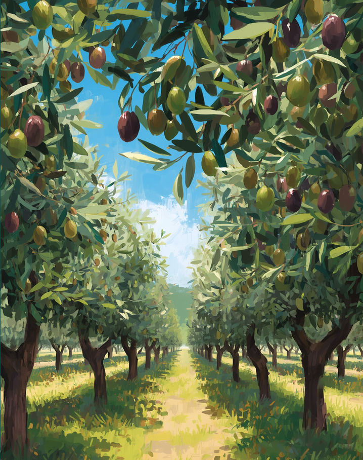
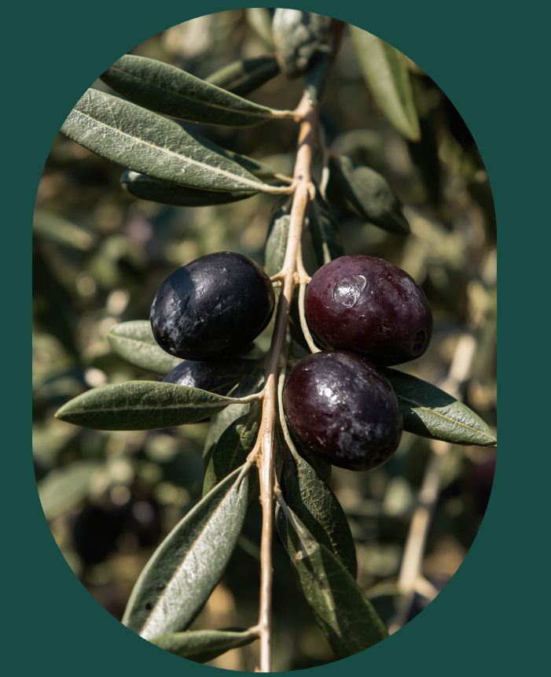

Discover Olive Oil
Experience the rich flavors and benefits of our olive oils
Our Commitment
Our mission is to produce exceptional olive oil by honoring traditional practices, ensuring every bottle reflects the passion, care, and commitment to sustainability from our trees to your kitchen.

Explore the health benefits, culinary uses, and sustainable practices of olive oil.
Explore the health benefits, culinary uses, and sustainable practices of olive oil.
This versatile ingredient enhances flavors and textures in various dishes, from salads to marinades, elevating your cooking while adding a Mediterranean flair.
Our commitment to sustainable practices ensures that every bottle contributes to environmental conservation, supporting local farmers and promoting biodiversity in olive-growing regions.
The Journey of Pure Flavor
The production of olive oil starts with careful harvesting of ripe olives, ensuring that only the best fruits are selected. This process is crucial for maintaining the high quality and richness of flavor, which ultimately defines the essence of our oils. Following harvesting, olives are promptly processed to create the finest oil. The pressing and extraction methods preserve the natural aroma and nutrients, resulting in a product that embodies the art of craftsmanship and dedication to quality in every drop.